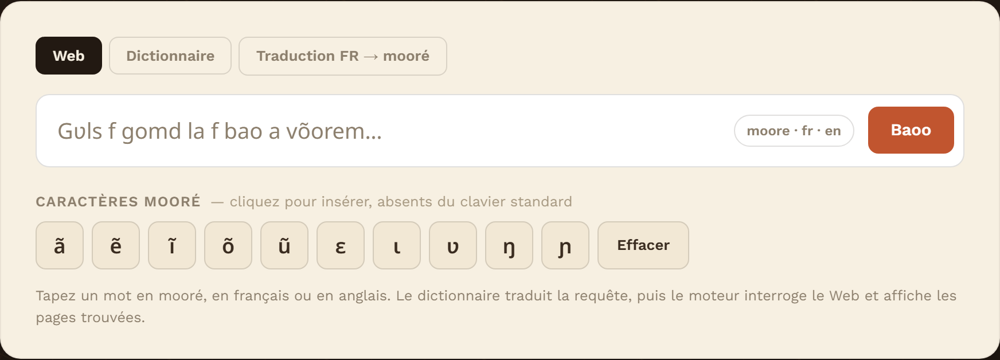
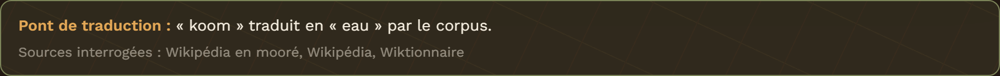
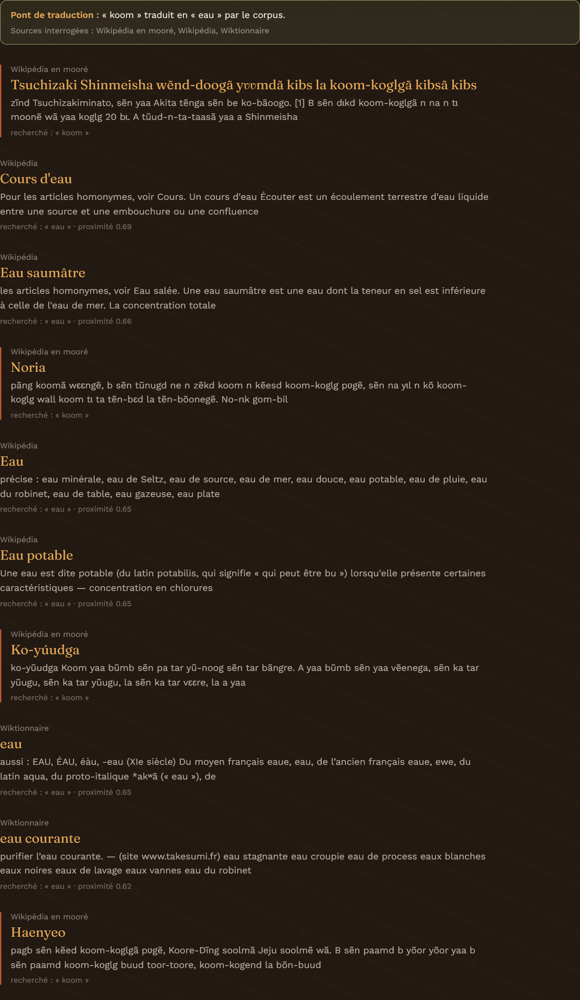
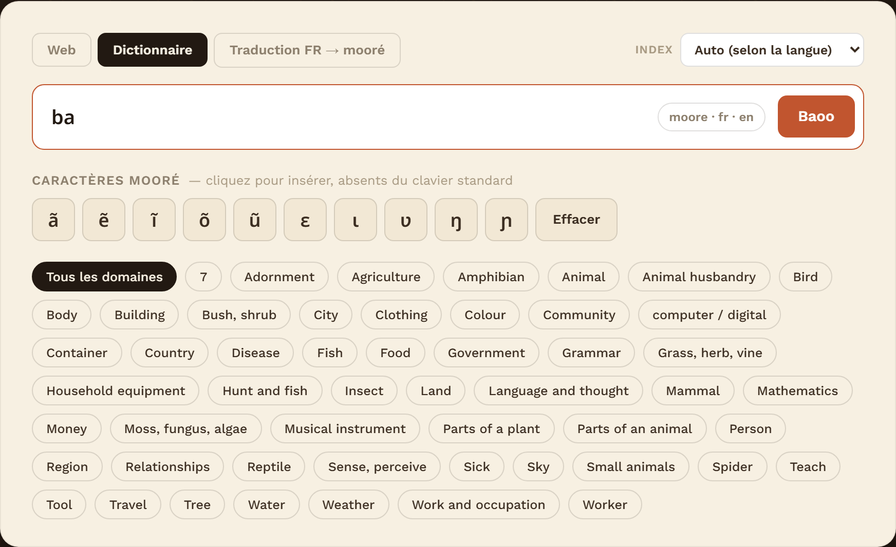
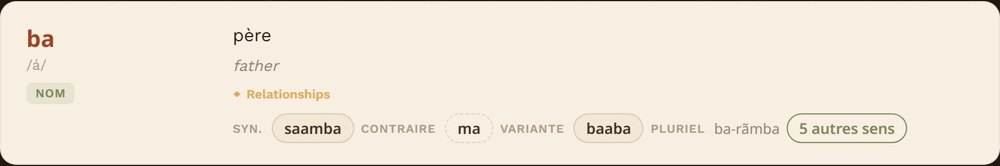
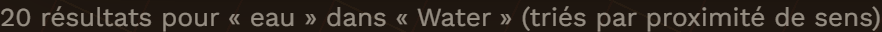
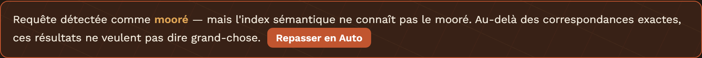
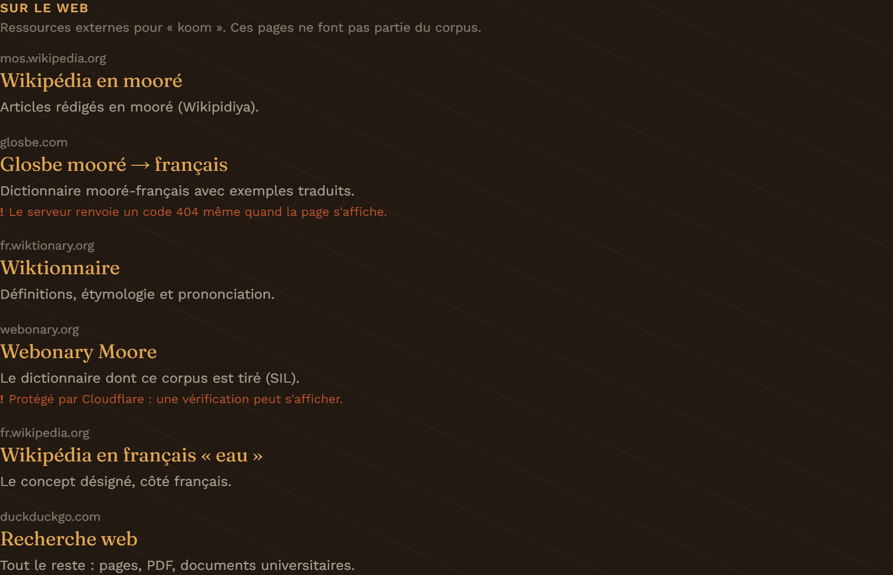
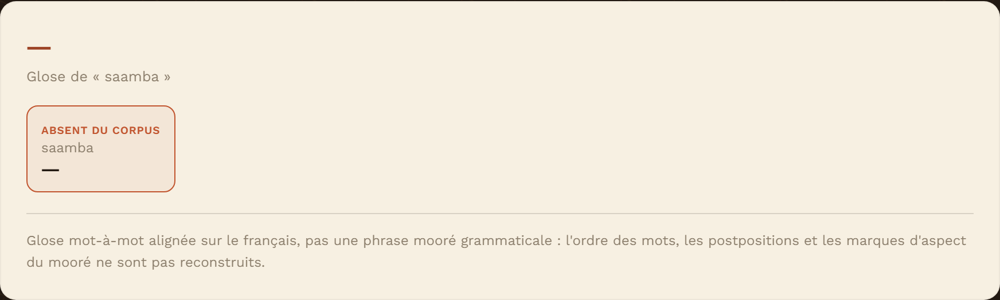

| SAVADOGO Adjaratou |
| KOMPAORE Malick |
| OUEDRAOGO Abdoul Razack |
| KABORE Olivier |
| Sigle | Signification |
|---|---|
| API | Application Programming Interface — interface de programmation |
| CORS | Cross-Origin Resource Sharing — règle du navigateur autorisant ou non un site à interroger un autre |
| FAISS | Facebook AI Similarity Search — bibliothèque de recherche de vecteurs proches |
| Flask | Micro-framework web Python utilisé pour l'API |
| JSON | JavaScript Object Notation — format d'échange de données |
| LSA | Latent Semantic Analysis — réduction de dimension appliquée au TF-IDF |
| MediaWiki | Moteur des sites Wikipédia et Wiktionnaire, doté d'une API publique |
| RRF | Reciprocal Rank Fusion — fusion de deux classements par les rangs |
| SVD | Singular Value Decomposition — décomposition employée par la LSA |
| TF-IDF | Term Frequency – Inverse Document Frequency — pondération des mots d'un document |
| UTF-8 | Encodage de caractères, nécessaire aux diacritiques du mooré |
Gʋls-n bao est un moteur de recherche Web multilingue conçu pour le mooré. L'utilisateur formule une requête en mooré, en français ou en anglais, et l'application lui rend des pages Web accompagnées de leur titre, d'un extrait et d'un lien direct.
Le cœur du dispositif est un dictionnaire vectoriel construit sur le corpus Webonary Moore (10 566 entrées). Ce dictionnaire ne sert pas seulement à consulter des mots : il fait office de pont de traduction. Une requête en mooré est traduite avant d'être envoyée aux sources francophones, et une requête française est rapprochée de son équivalent mooré pour interroger les sources en mooré. C'est ce qui rend le moteur réellement multilingue plutôt que littéral.
data/corpus_moore_webonary.csv, 10 566 entrées
mooré avec définitions française et anglaise, catégorie grammaticale,
prononciation, domaine, synonymes, antonymes, variantes et pluriel.| Élément | Rôle |
|---|---|
| api.py | Point d'entrée : API Flask et service de l'interface |
| search.py | Recherche dans le corpus ; les cinq index et leur routage |
| recherche_web.py | Recherche sur le Web et pont de traduction |
| translate.py | Glossage d'une phrase française en mooré |
| liens.py | Ressources externes proposées pour un mot |
| embeddings.py | Modèle d'embeddings pré-entraîné (optionnel) |
| build_index.py | Construit l'index TF-IDF/LSA à partir du corpus |
| build_st_index.py | Construit l'index sémantique (optionnel) |
| benchmark.py | Compare les index sur trois tâches, chiffres à l'appui |
| test_moteur.py | 66 tests de non-régression |
| moteur_recherche_moore_live.html | Interface web |
| data/ | Le corpus source au format CSV |
| vectors.index, vectorizers.pkl, corpus_meta.pkl |
Base vectorielle déjà construite, fournie prête à l'emploi |
| requirements.txt | Dépendances Python |
| README.md | Documentation technique détaillée |
L'application est multiplateforme : elle s'installe de la même manière sous Windows, Linux et macOS.
| Logiciel | Version | Utilité |
|---|---|---|
| Python | 3.9 ou plus (testé sur 3.11) | Exécuter l'application |
| pip | fourni avec Python | Installer les dépendances |
| Navigateur web | récent (Chrome, Edge, Firefox) | Consulter l'interface |
| Connexion Internet | requise pour l'onglet Web | Interroger Wikipédia et le Wiktionnaire |
| Espace disque | ≈ 100 Mo (1,2 Go avec l'index sémantique) | Corpus et index |
Vérifier la version de Python dans un terminal :
python --version
Si python n'est pas reconnu sous Windows, réinstaller Python en
cochant l'option « Add Python to PATH », ou utiliser py à
la place.
git clone https://github.com/malickabdoul/codebydarknet.git cd codebydarknet git checkout feature/base-vectorielle
Vérifier la présence de api.py, requirements.txt,
du dossier data/ et des trois fichiers de la base vectorielle
(vectors.index, vectorizers.pkl,
corpus_meta.pkl).
build_index.py qu'après avoir modifié le corpus.
L'environnement virtuel évite les conflits avec les autres projets Python.
python -m venv .venv .venv\Scripts\activate pip install -r requirements.txt
python3 -m venv .venv source .venv/bin/activate pip install -r requirements.txt
Le préfixe (.venv) doit apparaître au début de la ligne de
commande. Sont installés : pandas, numpy,
scipy, scikit-learn, faiss-cpu,
flask et flask-cors.
Un index supplémentaire, fondé sur un modèle d'embeddings multilingue, améliore nettement les requêtes en français et en anglais. Il est facultatif : sans lui, l'application se rabat automatiquement sur les index lexicaux et rien ne cesse de fonctionner.
pip install sentence-transformers python build_st_index.py
Cette étape télécharge environ 1 Go (la bibliothèque torch puis
le modèle) et l'encodage du corpus prend deux à trois minutes. Elle ne se
fait qu'une seule fois.
python test_moteur.py
La suite compte 66 tests et s'exécute en moins de deux minutes. Le
message final doit être OK. Les tests qui exigent l'index
sémantique se sautent d'eux-mêmes s'il n'a pas été construit ; ceux qui
interrogent le Web se sautent en l'absence de connexion.
Dans le terminal, environnement virtuel activé :
python api.py
Le démarrage affiche :
Chargement de la base vectorielle... -> 10566 entrées, 52 domaines -> interface : http://127.0.0.1:5000/
Laisser ce terminal ouvert. Ouvrir ensuite un navigateur à l'adresse http://127.0.0.1:5000/. L'interface s'affiche.
Pour arrêter l'application, appuyer sur Ctrl+C dans son terminal.
moteur_recherche_moore_live.html ; la
page détecte alors qu'elle est ouverte depuis le disque et interroge
http://127.0.0.1:5000, que l'API autorise explicitement.
L'écran se compose d'un panneau unique : les trois onglets, la barre de recherche, le clavier des caractères mooré, et — selon l'onglet — les filtres par domaine.

Les caractères ã ẽ ĩ õ ũ ɛ ɩ ʋ ŋ ɲ ne figurent pas sur un clavier ordinaire. Cliquer sur une touche l'insère à la position du curseur et relance la recherche. Le bouton Effacer vide le champ.
bag-teoko retrouve bãg-tẽoko.
C'est l'onglet actif au démarrage. Saisir un mot en mooré, en français ou en anglais : l'application détecte la langue, traduit la requête à l'aide du corpus, interroge les sources Web, puis affiche les pages trouvées.
Un bandeau explique le pont de traduction employé, afin que l'utilisateur sache toujours sur quel terme la recherche a réellement porté.

Chaque résultat comporte trois éléments :
Les pages en mooré sont signalées par un liseré rouge et réparties parmi les résultats. Cette précaution est délibérée : le modèle sémantique ne connaît pas le mooré et, laissé libre, reléguait systématiquement ces pages en fin de liste — un contresens dans un moteur destiné à des locuteurs du mooré.

Cet onglet interroge le corpus mooré, sans connexion Internet. Il affiche les entrées les plus proches du terme saisi, avec leurs définitions française et anglaise, leur catégorie grammaticale, leur prononciation et leur domaine.

Chaque entrée affiche, lorsqu'ils existent, ses synonymes, son contraire, ses variantes, son pluriel et le nombre d'autres sens du même mot. Tous ces renvois sont cliquables et relancent la recherche.

Cliquer sur une puce restreint les résultats à ce domaine ; recliquer la désactive. Le filtrage est effectué côté serveur, avant la sélection des meilleurs résultats — sans quoi un filtre renverrait souvent une liste vide.

Le sélecteur Index permet de choisir la méthode de recherche. Le mode Auto, actif par défaut, choisit lui-même selon la langue de la requête ; les autres valeurs servent surtout à comparer les méthodes.
| Index | Ce qu'il fait |
|---|---|
| Auto | Choisit selon la langue détectée. Recommandé. |
| Mots mooré | N-grammes de caractères sur les entrées ; retrouve un mot mooré même mal orthographié |
| TF-IDF seul | L'index d'origine : entrées et définitions mélangées |
| Sémantique seul | Embeddings pré-entraînés ; comprend le sens en français et en anglais |
| Hybride (RRF) | Fusion des deux précédents par les rangs |
Forcer un index inadapté à la requête produit du bruit. L'application le détecte et le signale, avec un bouton de retour au mode automatique.

Sous les résultats, la rubrique « Sur le web » propose des ressources externes pour le premier mot trouvé. Ces pages ne font pas partie du corpus, et l'interface le précise.

Cet onglet traite une phrase entière. La phrase est découpée, et chaque segment reçoit son équivalent mooré. Les expressions figées connues du corpus sont reconnues d'un seul bloc plutôt que mot à mot.

Une glose littérale ne peut pas deviner qu'une expression se dit autrement. L'application interroge donc aussi la base vectorielle sur la phrase entière et propose les tournures figées qui s'en rapprochent par le sens.
Ces suggestions sont affichées avec leur score de proximité et présentées comme à valider par un locuteur. Elles sont fiables sur les formules courantes, bruitées sur les phrases descriptives.
Toutes les fonctions sont accessibles sans interface :
# chercher des pages sur le Web python recherche_web.py "koom" # consulter le dictionnaire python search.py "eau" python search.py "eau" --domaine Water python search.py "koom" --backend entrees # gloser une phrase python translate.py "je veux boire de l'eau" # comparer les index, chiffres à l'appui python benchmark.py
| Symptôme | Cause probable | Solution |
|---|---|---|
python n'est pas reconnu |
Python absent ou hors du PATH | Réinstaller Python en cochant Add Python to PATH, ou utiliser py |
ModuleNotFoundError: faiss |
Dépendances non installées | Activer l'environnement virtuel puis pip install -r requirements.txt |
| « Impossible de joindre l'API » | api.py n'est pas lancé |
Relancer python api.py et laisser le terminal ouvert |
| « Port 5000 déjà utilisé » | Une autre instance tourne déjà | Fermer l'ancien terminal, ou changer le port dans api.py |
| L'onglet Web ne rend rien | Pas de connexion Internet | Vérifier la connexion. Les onglets Dictionnaire et Traduction restent utilisables hors ligne |
| Le sélecteur d'index est absent | L'index sémantique n'est pas construit | Comportement normal : un seul index est disponible. Voir § 3.3 |
| Résultats manifestement hors sujet | Un index inadapté a été forcé | Repasser sur Auto ; l'application affiche un avertissement dans ce cas |
Une définition finit par […] |
Le texte est coupé dans le corpus source | Rien à faire : le marqueur signale une donnée incomplète, pas une erreur d'affichage |
| Recherche sans résultat | Mot trop rare ou absent du corpus | Essayer un synonyme, ou passer par l'onglet Web |
Cette section recense honnêtement ce que l'application ne fait pas, afin qu'aucun utilisateur ne s'attende à davantage.
README.md.
L'application est autonome : une fois les dépendances installées, la commande
python api.py suffit à la démarrer, et l'interface est
immédiatement disponible sur http://127.0.0.1:5000/. Aucun serveur de
données externe n'est à configurer, la base vectorielle étant fournie
construite dans le dépôt.
Le moteur répond à une requête formulée en mooré, en français ou en anglais, et rend des pages Web avec leur titre, un extrait et un lien. Le corpus Webonary sert de pont entre les langues, et un reclassement sémantique améliore la pertinence des pages proposées. Deux onglets complémentaires donnent accès au dictionnaire lui-même et au glossage de phrases.
Les évolutions naturelles sont l'ajout d'un moteur de recherche généraliste comme quatrième source, la reconnaissance vocale, et l'extension à d'autres langues nationales du Burkina Faso.
codebydarknet/
|-- api.py # API Flask, sert aussi l'interface
|-- search.py # recherche dans le corpus, 5 index
|-- recherche_web.py # recherche Web + pont de traduction
|-- translate.py # glossage d'une phrase
|-- liens.py # ressources externes
|-- embeddings.py # modele pre-entraine (optionnel)
|-- build_index.py # construit l'index TF-IDF/LSA
|-- build_st_index.py # construit l'index semantique
|-- benchmark.py # comparaison chiffree des index
|-- test_moteur.py # 66 tests de non-regression
|-- moteur_recherche_moore_live.html # interface web
|-- requirements.txt
|-- README.md
|-- data/
| '-- corpus_moore_webonary.csv # 10 566 entrees
|-- vectors.index # index FAISS (fourni)
|-- vectorizers.pkl # vectoriseurs entraines (fourni)
|-- corpus_meta.pkl # metadonnees alignees (fourni)
'-- docs/
|-- manuel_utilisation.pdf # le present manuel
'-- captures/ # captures d'ecran
| Élément | Adresse |
|---|---|
| Interface | http://127.0.0.1:5000/ |
| Recherche Web | /api/web?q=koom&k=8 |
| Dictionnaire | /api/search?q=eau&k=10[&domaine=Water][&backend=auto] |
| Traduction | /api/translate?q=je veux boire de l'eau |
| Ressources externes | /api/liens?q=koom[&fr=eau] |
| Liste des domaines | /api/domaines |
| État du service | /api/health |
| Dépôt du projet | github.com/malickabdoul/codebydarknet |
| Branche de travail | feature/base-vectorielle |
Ce tableau reprend les quinze exigences fonctionnelles du cahier des charges et indique l'état de chacune.
| Réf. | Exigence | Priorité | État | Où |
|---|---|---|---|---|
| EF01 | Saisir un mot ou une expression | Haute | Satisfaite | § 5.2, 5.4 |
| EF02 | Requêtes en mooré | Haute | Satisfaite | § 5.2, 5.3 |
| EF03 | Requêtes en français | Haute | Satisfaite | § 5.2, 5.3 |
| EF04 | Requêtes en anglais | Haute | Satisfaite | § 5.2, 5.3 |
| EF05 | Caractères spécifiques du mooré | Haute | Satisfaite | § 5.1 |
| EF06 | Traiter la requête de l'utilisateur | Haute | Satisfaite | § 5.2 |
| EF07 | Effectuer une recherche sur le Web | Haute | Satisfaite | § 5.2 |
| EF08 | Récupérer les résultats correspondants | Haute | Satisfaite | § 5.2 |
| EF09 | Afficher les résultats sous forme de liste | Haute | Satisfaite | Figure 5.3 |
| EF10 | Afficher le titre et l'extrait de chaque résultat | Haute | Satisfaite | Figure 5.3 |
| EF11 | Fournir un lien vers la page Web | Haute | Satisfaite | § 5.2 |
| EF12 | Consulter directement les pages correspondantes | Haute | Satisfaite | § 5.2 |
| EF13 | Améliorer la pertinence par une approche sémantique | Moyenne | Satisfaite | § 5.2, 5.3 |
| EF14 | Recherche vocale | Basse | Non traitée | § 7 |
| EF15 | Prise en charge de nouvelles langues | Basse | Non traitée | § 7 |
Les douze exigences de priorité haute et l'exigence de priorité moyenne sont satisfaites. Les deux exigences restantes sont de priorité basse et rangées par le cahier des charges lui-même parmi les perspectives d'évolution.